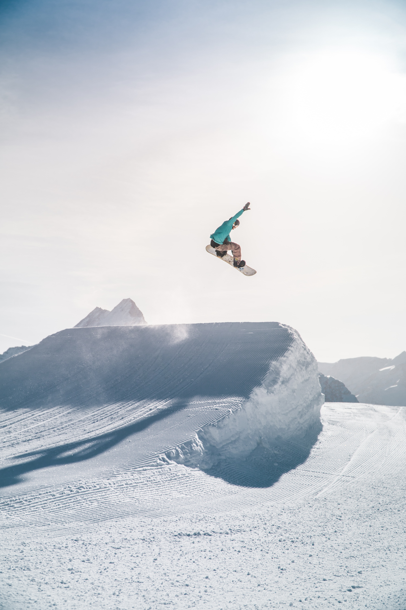

1. Soccer:
In this sport, you have to run around and kick the ball around to your teammates, and you have to score the ball into the other end of the field, and kick the ball inside the net to score a goal.


In this website, you will know what is the top 5 most popular and liked sports! And there are some more information, if you would like to know more about that sport! If you are intrested in this website, please scroll down. Enjoy! So here are some information about sports, sports is basically a sport that you can get exercised, or to become more healthier, some do it for fun, or to exercise, and some because their on a diet. There are many difffrent kinds of sports. Scroll down and you will know why!!
In this sport, you have to run around and kick the ball around to your teammates, and you have to score the ball into the other end of the field, and kick the ball inside the net to score a goal.
Cricket is the second most famous sport in the whole world, eventhough, some of you might not know know what this sport is, but it has 2.5 billion fans! Cricket is kind of like baseball, it has the same rules, but the scoring points are difffrent. I can be played indoored in a stadium, or outside on the grass!

Hockey a sport that can be separated into 2 kinds. The first one is, Ice hockey. Thesecond one is the normal hockey, the one you use on grass. I, personally think ice hockey is more difficult than the normal hockey, because in ice hockey, you also have to learn iceskating, and in my opinion, ice skating is very hard. Anyway, ice hockey is a sport kind of like goalball, the diffrence is you have to score the ball into the net, but in goalfball, you have to score the ball into a hole, which is much more difficult.
Tennis is a sport that includes running and swining your arms, it's kind of like two sports sdded together, running and the arms for swimming, so if you like to swim and run, I suggest you yo try out tennis, but when you play tennis, it's gonna be very VERY hot!!!! So remember to wear sunscreen, and if you like, you can add a hat too, these are just my suggestions, it depends on you.


Vollyball is a sport that includes teamwork, because you have to hit the ball up high, and ANOTHER person has to hit the ball to the other team, and that includes teamwork and alsotacit agreement. Vollyball is actually pretty fun for myself. And I'll tell you guys something if you think you're short and you think you can't play vollyball, but that isn't true, the shorter people an be the one to get the ball from hitting the floor, so you actually have a reall important role play!